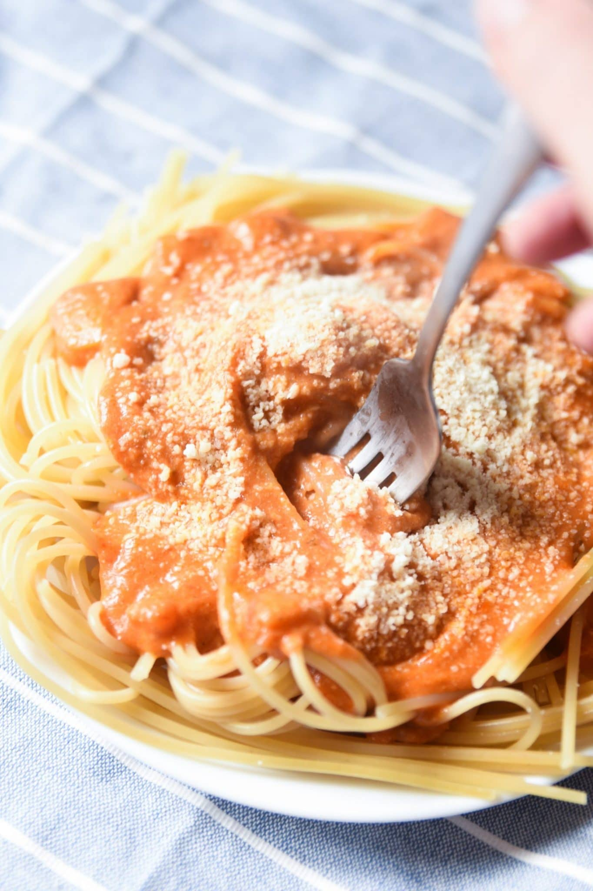

Olive Garden Five Cheese Marinara

Description
This is an amazing copy-cat recipe for Olive Gardens
famous Five Cheese Marinara! Feel free to add even more cheese,
you can never have too much! Heavy cream makes everything better as well,
but these are both optional.
Ingredients
- 2 Tablespoons Olive oil
- 1/2 cup chopped red onion
- 1 teaspoon minced garlic
- 2 jars marinara
- 1 jar alfredo
- 2 cups shredded Kraft Italian Cheese Blend
- 1/2 cup ricotta
- 1 tablespoon Italian seasoning
Steps
- Heat olive oil. Sautée onion and garlic.
- Add marinara sauces and alfredo and mix. Bring to a simmer.
- Whisk in ricotta, Italian cheeses, and Italian seasoning and stir until smooth. Simmer 10 mins.
- Serve over pasta.